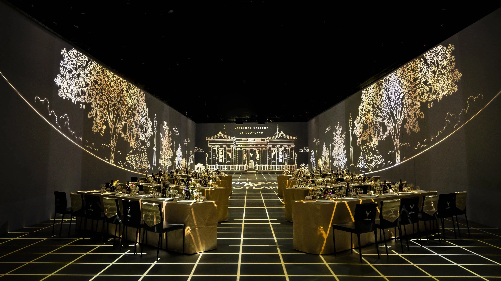
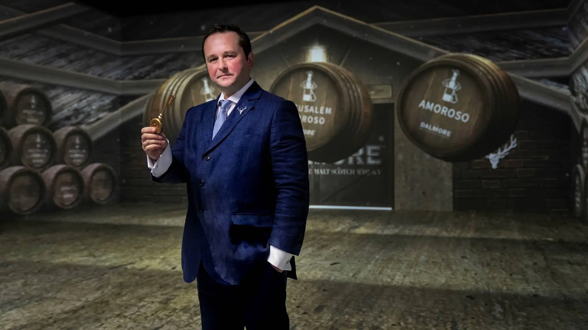

在奢華品味的殿堂裡，有些事物總是與眾不同，散發卓越光芒。它們經受時間的淬煉，開創出耀眼的軌跡。這些極致珍稀的存在，以經典完美的年份綻放華麗姿態。「大摩傳奇巡禮・共譜恆久璀璨」邀請消費者經歷一場跨時空、跨國界的奢華之旅。在有「神之鼻」美譽的大摩首席釀酒師Richard Paterson及新科年度最佳釀酒師－大摩總製酒師Gregg Glass的帶領下，消費者得以藝遊大摩經典佳釀的傳奇篇章，並駐足品酩全新上市的「大摩璀璨18年－2023 Edition -」，以傲視世界的不凡品味高度，共譜威士忌老酒銀行-大摩的熠熠光彩。

震撼全繞式體驗演繹超越當代的極致珍稀，引領觀眾進入超乎想像的沉浸殿堂
本次活動於全台最高規格的沉浸數位展演實踐平台双融域舉辦。特別邀請大摩總製酒師Gregg Glass首次來台，與消費者近距離的交流，更展現了大摩對於台灣這個全球最大的市場的重視。尚格酒業董事長奚大寧表示「市場上對於高年份酒款的需求也明顯逐年增加，我們發現台灣市場消費者越來越重視品牌背後的文化跟故事，所以持續發展『老酒銀行』的概念。」在傳奇大摩首席釀酒師Richard Paterson和大摩總製酒師Gregg Glass的帶領下，大摩璀璨歲月以高科技環繞體驗現於眼前，從台北飛越大摩亞歷山大三世國王紀念版的桶藏五大原鄉，作為世上唯一分別熟陳於6款獨特橡木桶的單一麥芽威士忌，大摩亞歷山大三世透過熟成工法譜出如交響樂般的華麗奧秘；接著再到蘇格蘭國家畫廊，共同賞析極無與倫比的藝術鉅作，領略大摩由歲月淬煉出的珍稀酒液及跨越百年的不朽傳奇；旅程最後於大摩傳奇酒廠閉幕，由Gregg Glass揭開大摩庫藏大門，與尚格酒業董事長奚大寧亦共同揭示了『大摩璀璨18年－2023 Edition -』，邀請消費者品酩深邃、濃郁的醇厚風味。
尚格酒業行銷總監張介怡表示：「大摩一直有老酒銀行之稱，作為全世界最尊貴的威士忌，我們特別選在具有指標性的台北101，帶領消費者體驗一場奢華的全沉浸式品酩會，品酩大摩的經典之作『大摩15年』、『大摩亞歷山大三世』及最新上市的『大摩璀璨18年－2023 Edition -』，相信能讓消費者沉醉於奢華與精緻之中，感受大摩的卓越魅力。」
首次來台 大摩總製酒師Gregg Glass暢談與傳奇大摩首席釀酒師Richard Paterson的合作經驗
老酒的完美體現，更是需要時間淬鍊與秉持著細節堅持，才能成就超越的珍稀。而製酒師在這之中，扮演著至關重要的角色。大摩總製酒師Gregg Glass表示：「自2016年加入大摩，我很榮幸可以追隨Richard Paterson，他給了我實驗和創造的自由，並與我攜手創作包括首創『金繼』橡木桶的『大摩築光大師系列』、『大摩典藏珍稀年份 The Dalmore Vintages』以及新上市的『大摩璀璨18年－2023 Edition -』。大摩璀璨18年2023 Edition使用西班牙GB集團獨家簽約超過30年老雪莉酒桶，使口感風味更濃厚，同時每瓶都有2023年份標示，每年限量批次推出，對收藏家來說更具意義。台灣是大摩最重要的市場，我們會持續為台灣消費者創造更多精采的作品。」Gregg近期剛獲得威士忌行業大賞(Icons of Whisky Awards)的年度釀酒大師稱號，這是全球威士忌行業的最高榮譽之一，他也是史上最年輕的得獎者。

| 大摩傳奇巡禮 藝遊路線 | |
|---|---|
| 奢藏專機 | 搭乘大摩奢藏專機作為巡禮起始，探尋世界唯一六桶熟成工藝－大摩亞歷山大三世單一麥芽蘇格蘭威士忌，一覽六款珍稀橡木桶，將獨一無二的威士忌珍釀風光盡收眼底。 |
| 雄鹿之死 | 收藏在蘇格蘭國家畫廊中的《雄鹿之死》畫作，紀錄1263年大摩傳奇故事起源，麥肯錫家族首領英勇拯救國王的事蹟，獲得國王亞歷山大三世授予「12叉鹿角的鹿首」之皇室徽章。 |
| 大摩酒廠 | 坐落於蘇格蘭高地Cromarty海灣北岸，讓大摩擁有釀造威士忌優異的地理條件，並與西班牙知名雪莉酒莊 Gonzalez Byass 獨家簽約，取得 Matusalem oloroso 一款陳年超過30年的雪莉酒橡木桶，造就大摩老酒經典風味。 |
| 大摩佳績 | 大摩堅持以長時間淬釀醇厚酒液，秉持著追求卓越的精神，不斷在世界級拍賣會上打破威士忌拍賣紀錄，締造全世界最尊貴威士忌的不朽傳奇。 |
| 老酒銀行 | 擁有老酒銀行之稱的大摩，推出經典代表－「大摩 璀璨18年單一麥芽蘇格蘭威士忌 －2023 Edition -」，每年限量批次典藏，秉持唯有完美可以襯托完美的信念，成就超越當代的經典。 |
大摩雪莉三桶12年單一麥芽蘇格蘭威士忌
- 橡木桶履歷：波本桶、西班牙Matusalem Oloroso雪莉桶、Pedro Ximénez雪莉桶
- 酒精濃度：43%
- 容量：700ml
- 香氣：焦糖柳橙、生薑、蘇丹娜葡萄與蜂蜜
- 口感：黑巧克力、杏仁碎與肉桂粉
- 餘韻：甜芒果、義式奶酪及檸檬戚風蛋糕
- 建議售價：NTD 2,000
大摩璀璨18年單一麥芽蘇格蘭威士忌－2023 Edition -
- 橡木桶履歷：波本桶、西班牙Matusalem Oloroso雪莉桶
- 酒精濃度：43%
- 容量：700ml
- 香氣：香草、甘草糖、黑巧克力、英式柑橘果醬
- 口感：柑橘、咖啡、葡萄乾巧克力、肉豆蔻
- 餘韻：燉煮水果甜香、奶油太妃糖
- 建議售價：NTD 12,000
大摩亞歷山大三世國王紀念款單一麥芽蘇格蘭威士忌
- 橡木桶履歷：橡木桶履歷：美國波本桶、西班牙雪莉桶、葡萄牙馬德拉酒桶、義大利馬莎拉酒桶、葡萄牙波特酒桶，法國卡本內蘇維翁葡萄酒桶
- 酒精濃度：40%
- 容量：700ml
- 香氣：紅莓子水果，鮮花及微微的百香果香氣
- 口感：新鮮柳橙、香草豆莢，伴隨奶油焦糖與碎杏仁層次
- 餘韻：甜甜美肉桂氣息、伴隨果乾、荳蔻與辛香料
- 建議售價：NTD 6,950